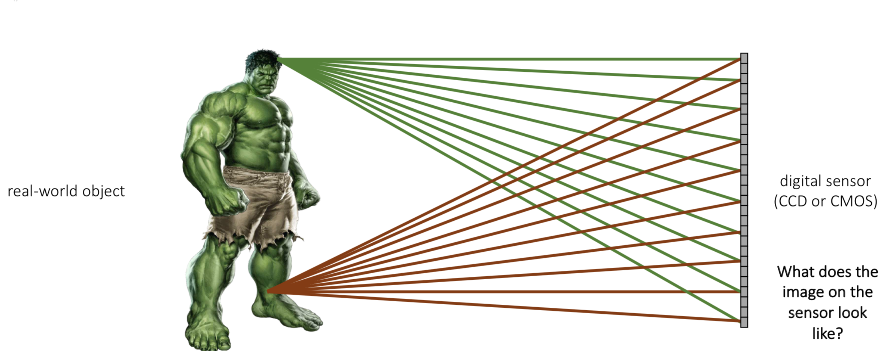
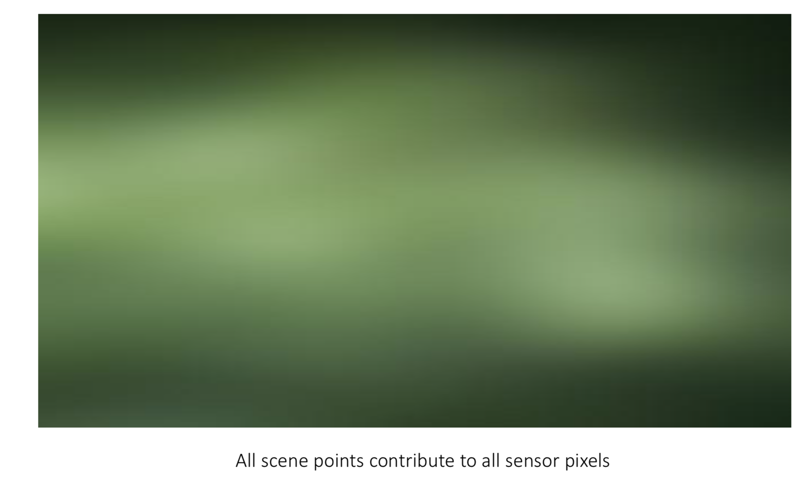
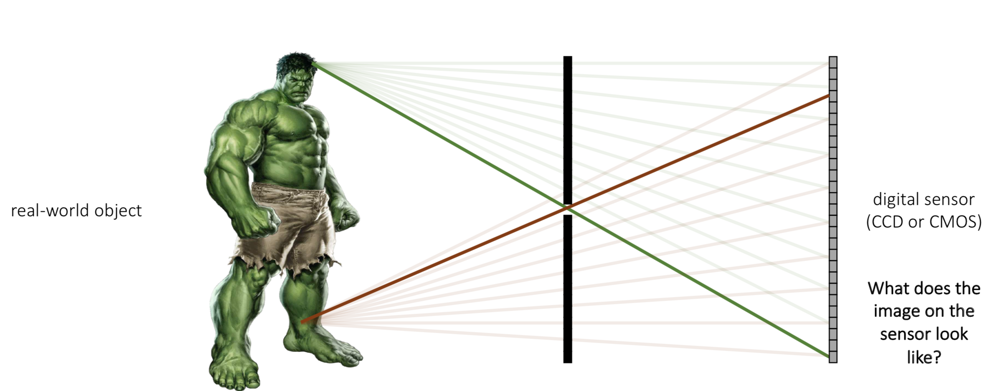
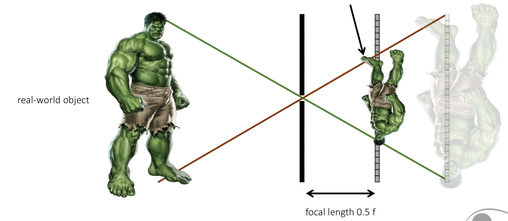
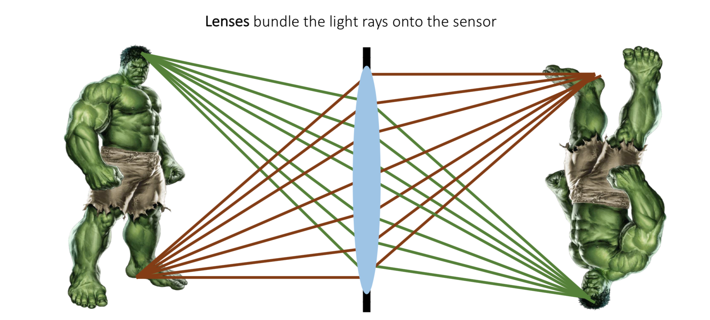

相机模型
首先我们知道物体本身是不发光的，我们所看到的有颜色的物体都是都是物体反射太阳或其他光源基于大脑的色觉系统所产生的。而相机就是基于人类的色觉系统所制造成的。比如下图的我们眼中的绿巨人浩克，多条不同方向的光线在他身上反射后会被右侧相机的光学传感器所接收。

如果不对这些光线做处理，绿巨人身上的每一点都会作用于光学传感器上的每一个像素，产生如下图的效果。

很显然，这并不是我们想要的结果，所以人们就想到如果能把多余的反射光线遮住，使得实物上的每一点和相机上的每一个像素相对应，由此就得出来最简单的单孔相机（pinhole）模型，如下图所示。

得到了简单的单孔模型之后，我们又引出了焦距（focus length）的概念，根据相似的定义可以知道焦距越小所得到图像也越小，而且是和实物上下颠倒。

因为单孔模型会遮掉很多多余的反射光线，使得光线的利用率不高，所以为了提高光线的利用率我们想到可以把带小孔的遮光板换成透镜，这样既可以提高光线的利用率，又可以满足我们之前的要求。
